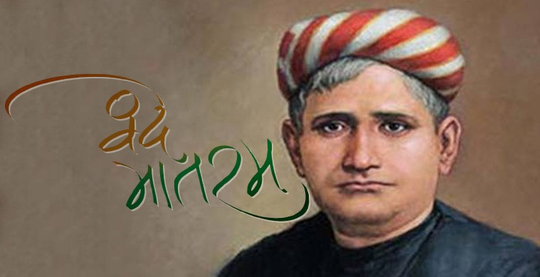
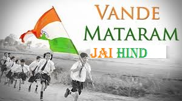

VANDE MATARAM


Vande Mataram is a poem written by Bankim Chandra Chattopadhyay in 1870s, which he included in his 1881 novel Anandamath. The poem was composed into song by Rabindranath Tagore.The first two verses of the song were adopted as the National Song of India in October 1937 by Congress Working Committee prior to the end of colonial rule in August 1947.
An ode to Durga as the Mother goddess, it was written in Bengali script in the novel Anandmath. The title 'Vande Mataram' means "I praise thee, Mother" or "I praise to thee, Mother". The "mother goddess" in later verses of the song has been interpreted as the motherland of the people - Bangamata (Mother Bengal) and Bharat Mata (Mother India), though the text does not mention this explicitly.

In 1950 (after India's independence), the first two verses of the song were declared the "national song" of the Republic of India, distinct from the national anthem of India, Jana Gana Mana. The first two verses of the song are an abstract reference to mother and motherland, they do not mention any Hindu deity by name, unlike later verses that do explicitly mention goddesses such as Durga. There is no time limit or circumstantial specification for the rendition of this song [unlike the national anthem Jana Gana Mana that specifies 52 seconds].